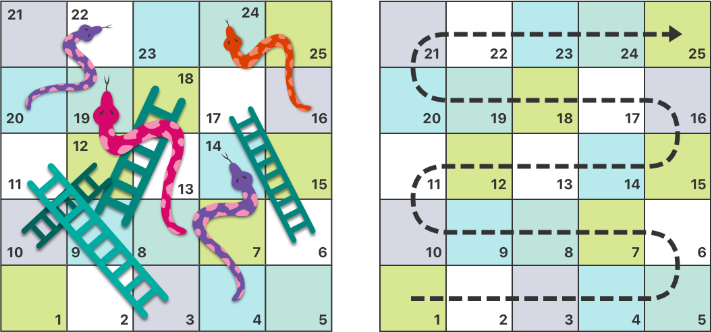

Control Flow¶ 制御の流れ¶
Swift provides a variety of control flow statements. These include while loops to perform a task multiple times; if, guard, and switch statements to execute different branches of code based on certain conditions; and statements such as break and continue to transfer the flow of execution to another point in your code.
スウィフトは、さまざまな制御の流れ文を提供します。これらは、ある作業を複数回実行するwhileループ；特定の条件に基づいてコードの異なる分岐を実行するif、guard、およびswitch文；そして実行の流れをあなたのコードの別の地点に移す、breakおよびcontinueのような文を含みます。
Swift also provides a for-in loop that makes it easy to iterate over arrays, dictionaries, ranges, strings, and other sequences.
スウィフトはまた、for-inループを提供します、それは、配列、辞書、範囲、文字列、およびその他のシーケンス（連続したもの）の全体にわたって繰り返し処理するのを簡単にします。
Swift’s switch statement is considerably more powerful than its counterpart in many C-like languages. Cases can match many different patterns, including interval matches, tuples, and casts to a specific type. Matched values in a switch case can be bound to temporary constants or variables for use within the case’s body, and complex matching conditions can be expressed with a where clause for each case.
スウィフトのswitch文は、多くのCに似た言語において相当する物よりずっと強力です。それらのケース節は、区間マッチ、タプル、そして特定の型への型キャストを含む、多くの異なるパターンにマッチすることができます。あるswitchケース節においてマッチされた値は、そのケース節内の本文で使われるために一時的な定数や変数に結び付けられることができます、そして複雑なマッチ条件が各ケース節に対してwhere節を使って表わされることができます。
For-In Loops¶ for-inループ¶
You use the for-in loop to iterate over a sequence, such as items in an array, ranges of numbers, or characters in a string.
あなたはfor-inループを、ある連続物について、例えば配列の中の項目、数の範囲、または文字列の中の文字について、それに含まれるすべてに繰り返していくために使用します。
This example uses a for-in loop to iterate over the items in an array:
この例は、for-inループを使って、ある配列の中の項目すべてにわたって繰り返していきます：
- let names = ["Anna", "Alex", "Brian", "Jack"]
- for name in names {
- print("Hello, \(name)!")
- }
- // Hello, Anna!（よろしく、アンナ！）
- // Hello, Alex!（よろしく、アレックス！）
- // Hello, Brian!（よろしく、ブライアン！）
- // Hello, Jack!（よろしく、ジャック！）
You can also iterate over a dictionary to access its key-value pairs. Each item in the dictionary is returned as a (key, value) tuple when the dictionary is iterated, and you can decompose the (key, value) tuple’s members as explicitly named constants for use within the body of the for-in loop. In the code example below, the dictionary’s keys are decomposed into a constant called animalName, and the dictionary’s values are decomposed into a constant called legCount.
あなたは、また、辞書の端から端まで繰り返して、その「キーと値」の対にアクセスすることができます。辞書の中の各項目は、辞書が繰り返されるとき、(key, value)タプルとして返されます、そしてあなたは(key, value)タプルの構成要素をfor-inループの本文内で使用するわかりやすい名前の定数として分解することができます。下のコード例において、辞書のキーはanimalNameと呼ばれる定数へと分解されます、そして辞書の値はlegCountと呼ばれる定数へと分解されます。
- let numberOfLegs = ["spider": 8, "ant": 6, "cat": 4]
- for (animalName, legCount) in numberOfLegs {
- print("\(animalName)s have \(legCount) legs")
- }
- // cats have 4 legs（猫は、４本の足を持っています）
- // ants have 6 legs（蟻は、６本の足を持っています）
- // spiders have 8 legs（蜘蛛は、８本の足を持っています）
The contents of a Dictionary are inherently unordered, and iterating over them does not guarantee the order in which they will be retrieved. In particular, the order you insert items into a Dictionary doesn’t define the order they are iterated. For more about arrays and dictionaries, see Collection Types.
Dictionaryの内容は本質的に順序付けされません、そしてそれらに繰り返すことはそれらが取り出される順番を保証しません。特に、あなたがDictionaryへと項目を挿入する順序はそれらが反復される順序を定義しません。配列と辞書に関する詳細は、コレクション型を見てください。
You can also use for-in loops with numeric ranges. This example prints the first few entries in a five-times table:
あなたまた、for-inループを数値範囲とともに使うことができます。この例は、九九の５の段の表の最初のいくつかの項を出力します：
- for index in 1...5 {
- print("\(index) times 5 is \(index * 5)")
- }
- // 1 times 5 is 5（１かける５は、５です）
- // 2 times 5 is 10（２かける５は、10です）
- // 3 times 5 is 15（３かける５は、15です）
- // 4 times 5 is 20（４かける５は、20です）
- // 5 times 5 is 25（５かける５は、25です）
The sequence being iterated over is a range of numbers from 1 to 5, inclusive, as indicated by the use of the closed range operator (...). The value of index is set to the first number in the range (1), and the statements inside the loop are executed. In this case, the loop contains only one statement, which prints an entry from the five-times table for the current value of index. After the statement is executed, the value of index is updated to contain the second value in the range (2), and the print(_:separator:terminator:) function is called again. This process continues until the end of the range is reached.
それに対して繰り返しを行われている連続物（シーケンス）は、完結範囲演算子（...）の使用によって示されるように、1から5までを含める数からなる範囲です。indexの値は、この範囲の最初の数（1）に設定されます、そしてループの内側の文が実行されます。この場合では、ループは１つの文だけを含みます、それは、indexの現在の値に対する九九の５の段の項を出力します。文が実行されたあと、indexの値は範囲の２番目の値（2）を含むように更新されます、そしてprint(_:separator:terminator:)関数が再び呼ばれます。この過程は、範囲の終わりに達するまで続きます。
In the example above, index is a constant whose value is automatically set at the start of each iteration of the loop. As such, index does not have to be declared before it is used. It is implicitly declared simply by its inclusion in the loop declaration, without the need for a let declaration keyword.
上の例で、indexは、ループの各繰り返しの開始時点でその値が自動的に設定される定数です。このように、indexは、それが使われる前に宣言される必要はありません。それはループ宣言にひっくるめることによって、let宣言キーワードの必要なしで、簡易に暗黙のうちに宣言されます。
If you don’t need each value from a sequence, you can ignore the values by using an underscore in place of a variable name. あなたがある連続物からの各値を必要としないならば、あなたは変数の名前の代わりにアンダースコアを使うことによってその値を無視することができます。
- let base = 3
- let power = 10
- var answer = 1
- for _ in 1...power {
- answer *= base
- }
- print("\(base) to the power of \(power) is \(answer)")
- // Prints "3 to the power of 10 is 59049"（「３の10乗は、59049です」を出力します）
The example above calculates the value of one number to the power of another (in this case, 3 to the power of 10). It multiplies a starting value of 1 (that is, 3 to the power of 0) by 3, ten times, using a closed range that starts with 1 and ends with 10. For this calculation, the individual counter values each time through the loop are unnecessary—the code simply executes the loop the correct number of times. The underscore character (_) used in place of a loop variable causes the individual values to be ignored and does not provide access to the current value during each iteration of the loop.
上の例は、ある数を他のもので乗算した値を計算します（この場合、3の10乗）。それは開始値の1（すなわち、3の0乗）に3を掛けることを、10回、1から始まり10で終わる完結範囲を使って行います。この計算では、ループするごとに個別のカウンタ値は必要ではありません ― このコードは単に正しい回数ループを実行するだけです。ループ変数の代わりに使われるアンダースコア文字（_）は、その個別の値を無視されるようにして、ループの各繰り返しのときにその現在の値へのアクセスを提供しません。
In some situations, you might not want to use closed ranges, which include both endpoints. Consider drawing the tick marks for every minute on a watch face. You want to draw 60 tick marks, starting with the 0 minute. Use the half-open range operator (..<) to include the lower bound but not the upper bound. For more about ranges, see Range Operators.
同じ状況において、あなたは完結範囲を使いたいと思うかもしれません、それは両方の終端を含みます。時計盤上のすべての分表示に目盛りを描画することを考えてください。あなたは、0分から開始して、60個の目盛りを描こうと思います。半開範囲演算子（..<）を使って、下方の境界を含めて、しかし上方の境界を含めないようにしてください。範囲に関する詳細は、範囲演算子を見てください。
- let minutes = 60
- for tickMark in 0..<minutes {
- // render the tick mark each minute (60 times)（各分に目盛りを描画する（60回））
- }
Some users might want fewer tick marks in their UI. They could prefer one mark every 5 minutes instead. Use the stride(from:to:by:) function to skip the unwanted marks.
幾人かのユーザは、より少ない目盛りを彼らのUIに望むかもしれません。彼らは、代わりに5分毎に１つの印を選ぶことができます。stride(from:to:by:)関数を使って、不必要な印を飛ばしてください。
- let minuteInterval = 5
- for tickMark in stride(from: 0, to: minutes, by: minuteInterval) {
- // render the tick mark every 5 minutes (0, 5, 10, 15 ... 45, 50, 55)（５分毎に目盛りを描画する（0, 5, 10, 15 ... 45, 50, 55））
- }
Closed ranges are also available, by using stride(from:through:by:) instead:
完結範囲も利用可能です、代わりにstride(from:through:by:)を使うことで：
- let hours = 12
- let hourInterval = 3
- for tickMark in stride(from: 3, through: hours, by: hourInterval) {
- // render the tick mark every 3 hours (3, 6, 9, 12)（３時間ごとに目盛りを描画する（3, 6, 9, 12））
- }
While Loops¶ whileループ¶
A while loop performs a set of statements until a condition becomes false. These kinds of loops are best used when the number of iterations is not known before the first iteration begins. Swift provides two kinds of while loops:
whileループは、ひとまとめにした文を、ある条件がfalseになるまで実行します。これらの種類のループが最も使われるのは、繰り返しの回数が最初の繰り返しが始まる前にはわからないときです。スウィフトは２種類のwhileループを提供します：
whileevaluates its condition at the start of each pass through the loop.whileは、その条件を、ループを通り抜けるそれぞれの始まりで評価します。repeat-whileevaluates its condition at the end of each pass through the loop.repeat-whileは、その条件を、ループを通り抜けるそれぞれの終わりで評価します。
While¶ 最初に評価¶
A while loop starts by evaluating a single condition. If the condition is true, a set of statements is repeated until the condition becomes false.
whileループは、１つだけ条件を評価することによって始まります。その条件がtrueならば、条件がfalseになるまで、ひとかたまりの文が繰り返されます。
Here’s the general form of a while loop:
whileループの一般的な形式は、ここにあります：
- while condition {
- statements
- }
This example plays a simple game of Snakes and Ladders (also known as Chutes and Ladders): この例は、単純なゲームの「ヘビとはしご」（また、「荷すべらしとはしご」として知られます）で遊びます：
The rules of the game are as follows: ゲームの規則は、次の通りです：
- The board has 25 squares, and the aim is to land on or beyond square 25. この盤には25の正方形があります、そして目ざすのは正方形25の上に乗るまたは越える事です。
- The player’s starting square is “square zero”, which is just off the bottom-left corner of the board. プレーヤーの出発する正方形は「正方形ゼロ」です、それは、盤の左下の角からちょっと離れています。
- Each turn, you roll a six-sided dice and move by that number of squares, following the horizontal path indicated by the dotted arrow above. 順番になるたび、あなたは六面のさいころを転がします、そしてその数だけ正方形を移動します、上の点線の矢印で示される水平移動の経路をたどっていきます。
- If your turn ends at the bottom of a ladder, you move up that ladder. あなたの番がはしごの下で終わるならば、あなたはそのはしごを上ります。
- If your turn ends at the head of a snake, you move down that snake. あなたの番がヘビの頭のところで終わるならば、あなたはそのヘビを下ります。
The game board is represented by an array of Int values. Its size is based on a constant called finalSquare, which is used to initialize the array and also to check for a win condition later in the example. Because the players start off the board, on “square zero”, the board is initialized with 26 zero Int values, not 25.
ゲーム盤は、Int値の配列によって表されます。その大きさはfinalSquareと呼ばれる定数に基づきます、そして、それがこの配列を初期化して、さらにこの例の後半で勝利したかどうか調べるために使われます。プレイヤーは、「正方形ゼロ」で盤を始めることから、この盤は26個のゼロInt値で初期化されます、25ではなく。
- let finalSquare = 25
- var board = [Int](repeating: 0, count: finalSquare + 1)
Some squares are then set to have more specific values for the snakes and ladders. Squares with a ladder base have a positive number to move you up the board, whereas squares with a snake head have a negative number to move you back down the board. いくつかの正方形は、それからヘビとはしごのためのより独特な値を持つように設定されます。はしごの接地面がある正方形は、あなたを盤の上方に動かすために正の番号を持ちます、一方でヘビの頭のある正方形は、あなたを逆に盤の下に動かすために負の数を持ちます。
- board[03] = +08; board[06] = +11; board[09] = +09; board[10] = +02
- board[14] = -10; board[19] = -11; board[22] = -02; board[24] = -08
Square 3 contains the bottom of a ladder that moves you up to square 11. To represent this, board[03] is equal to +08, which is equivalent to an integer value of 8 (the difference between 3 and 11). To align the values and statements, the unary plus operator (+i) is explicitly used with the unary minus operator (-i) and numbers lower than 10 are padded with zeros. (Neither stylistic technique is strictly necessary, but they lead to neater code.)
正方形３は、正方形11まであなたを動かすはしごの底を含みます。これを表すために、board[03]は+08と等しいです、そしてそれは、整数値の８（3と11の差）に等しいです。値と文を整列するために、単項プラス演算子（+i）が明示的に単項マイナス演算子（-i)とともに使われます、そして10より低い数はゼロを詰められます。（文体上の技巧は絶対に必要な訳ではありません、しかしそれはすっきりしたコードにつながります。）
- var square = 0
- var diceRoll = 0
- while square < finalSquare {
- // roll the dice（さいころを振る）
- diceRoll += 1
- if diceRoll == 7 { diceRoll = 1 }
- // move by the rolled amount（振られた量だけ移動）
- square += diceRoll
- if square < board.count {
- // if we're still on the board, move up or down for a snake or a ladder（私達がまだ盤上ならば、ヘビまたははしごに対して上／下に移動する）
- square += board[square]
- }
- }
- print("Game over!")
The example above uses a very simple approach to dice rolling. Instead of generating a random number, it starts with a diceRoll value of 0. Each time through the while loop, diceRoll is incremented by one and is then checked to see whether it has become too large. Whenever this return value equals 7, the dice roll has become too large and is reset to a value of 1. The result is a sequence of diceRoll values that is always 1, 2, 3, 4, 5, 6, 1, 2 and so on.
上の例は、さいころ振りに対する非常に単純なアプローチを使います。無作為な数を生成する代わりに、それは0のdiceRoll値から始めます。毎回whileループの間、diceRollは１増やされて、それからそれが大きくなりすぎていないか調べられます。この戻り値が7に等しいときはいつでも、そのさいころの目は大きくなり過ぎているので、値1へ設定し直されます。結果は一連のdiceRoll値で、それは常に1、2、3、4、5、6、1、2など、となります。
After rolling the dice, the player moves forward by diceRoll squares. It’s possible that the dice roll may have moved the player beyond square 25, in which case the game is over. To cope with this scenario, the code checks that square is less than the board array’s count property. If square is valid, the value stored in board[square] is added to the current square value to move the player up or down any ladders or snakes.
さいころを転がした後、プレーヤーは正方形をdiceRoll分だけ前進します。さいころを振ることが正方形25を越えてプレーヤーを動かす可能性はあり得ます、その場合にはゲームは終了です。この事態に対処するために、コードは、squareがboard配列のcountプロパティより少ないことを確認します。squareが有効ならば、board[square]に格納される値は現在のsquareの値に加えられて、はしごや蛇があればプレーヤーを上や下に動かします。
Note 注意
If this check is not performed, board[square] might try to access a value outside the bounds of the board array, which would trigger a runtime error.
この確認が行われなかったならば、board[square]はboard配列の境界外で値にアクセスしようとするかもしれません、それは実行時エラーを引き起こします。
The current while loop execution then ends, and the loop’s condition is checked to see if the loop should be executed again. If the player has moved on or beyond square number 25, the loop’s condition evaluates to false and the game ends.
現在のwhileループ実行はそれから終了します、そしてループが再び実行されなければならないかどうか見るためにループの条件が調べられます。プレーヤーが25番目の正方形の上にまたは越えて移動したならば、ループの条件はfalseに評価してゲームは終わります。
A while loop is appropriate in this case, because the length of the game is not clear at the start of the while loop. Instead, the loop is executed until a particular condition is satisfied.
whileループはこの場合に適切なものです、なぜならゲームの長さはwhileループの開始時点ではっきりしないからです。その代わりに、このループは特定の条件が満たされるまで実行されます。
Repeat-While¶ 終わりに評価¶
The other variation of the while loop, known as the repeat-while loop, performs a single pass through the loop block first, before considering the loop’s condition. It then continues to repeat the loop until the condition is false.
whileループのもう一方の変種、repeat-whileループとして知られるものは、ループの条件を考慮する前に、最初に一度だけループ・ブロックの通り抜けを実行します。それはそれから、条件がfalseになるまでループを繰り返し続けます。
Note 注意
The repeat-while loop in Swift is analogous to a do-while loop in other languages.
スウィフトのrepeat-whileループは、他の言語のdo-whileループと類似したものです。
Here’s the general form of a repeat-while loop:
repeat-whileループの一般的な形式は、ここにあります：
- repeat {
- statements
- } while condition
Here’s the Snakes and Ladders example again, written as a repeat-while loop rather than a while loop. The values of finalSquare, board, square, and diceRoll are initialized in exactly the same way as with a while loop.
ここに再び「ヘビとはしご」の例があります、それはrepeat-whileループとして書かれます、whileループではなく。finalSquare、board、square、そしてdiceRollの値は、正確にwhileループと同じやり方で初期化されます。
- let finalSquare = 25
- var board = [Int](repeating: 0, count: finalSquare + 1)
- board[03] = +08; board[06] = +11; board[09] = +09; board[10] = +02
- board[14] = -10; board[19] = -11; board[22] = -02; board[24] = -08
- var square = 0
- var diceRoll = 0
In this version of the game, the first action in the loop is to check for a ladder or a snake. No ladder on the board takes the player straight to square 25, and so it isn’t possible to win the game by moving up a ladder. Therefore, it’s safe to check for a snake or a ladder as the first action in the loop. ゲームのこの改作において、ループでの最初の活動は、はしごまたはヘビについて調べることです。盤上のはしごは、プレーヤーをまっすぐ正方形25に連れて行きません、なので、はしごを上がることでゲームに勝つことは可能ではありません。したがって、ループでの最初の活動として、ヘビまたははしごについて調べるのは差し支えありません。
At the start of the game, the player is on “square zero”. board[0] always equals 0 and has no effect.
ゲームの開始時点で、プレーヤーは−「正方形ゼロ」の上にいます。board[0]は、常に0に等しくて、効果を持ちません。
- repeat {
- // move up or down for a snake or ladder（ヘビまたははしごのための上下移動）
- square += board[square]
- // roll the dice（さいころを振る）
- diceRoll += 1
- if diceRoll == 7 { diceRoll = 1 }
- // move by the rolled amount（振られた量だけ移動）
- square += diceRoll
- } while square < finalSquare
- print("Game over!")
After the code checks for snakes and ladders, the dice is rolled and the player is moved forward by diceRoll squares. The current loop execution then ends.
コードがヘビとはしごについて調べた後、さいころが振られてプレーヤーはdiceRollだけの正方形を前進させられます。現在のループ実行はそれで終わりです。
The loop’s condition (while square < finalSquare) is the same as before, but this time it’s not evaluated until the end of the first run through the loop. The structure of the repeat-while loop is better suited to this game than the while loop in the previous example. In the repeat-while loop above, square += board[square] is always executed immediately after the loop’s while condition confirms that square is still on the board. This behavior removes the need for the array bounds check seen in the while loop version of the game described earlier.
ループの条件（while square < finalSquare）は前と同じものです、しかし今回それは最初のループ通り抜けの終わりまで評価されません。repeat-whileループの構造は、前の例でのwhileループよりも更に良くこのゲームに適しています。上のrepeat-whileループにおいて、square += board[square]は常に、このループのwhile条件がsquareはまだ盤上かを確認した直後に実行されます。この挙動は、前に記述されたwhileループ版のゲームで見られた配列の境界検査の必要を取り除きます。
Conditional Statements¶ 条件つきの文¶
It is often useful to execute different pieces of code based on certain conditions. You might want to run an extra piece of code when an error occurs, or to display a message when a value becomes too high or too low. To do this, you make parts of your code conditional. 特定の状況に基づいて異なるコード小片を実行することは、しばしば役に立ちます。あなたは、エラーが発生する時にコードの臨時の小片を実行したいかもしれません、またある値があまりに高いかあまりに低くなる時にお知らせを表示したいかもしれません。これをするために、あなたは、あなたのコードの一部を条件つきにします。
Swift provides two ways to add conditional branches to your code: the if statement and the switch statement. Typically, you use the if statement to evaluate simple conditions with only a few possible outcomes. The switch statement is better suited to more complex conditions with multiple possible permutations and is useful in situations where pattern matching can help select an appropriate code branch to execute.
スウィフトは条件分岐をあなたのコードに加える２つの方法：if文とswitch文を提供します。一般的に、あなたはif文をほんの２、３の起こりうる結果だけを持つ単純な状況を評価するために使います。switch文は、複数の可能な起こりうる組み合わせを伴うさらに複雑な状況によりよく適します、そして、パターンマッチングが適切なコード分岐を選択して実行する助けとなり得る状況において役立ちます。
If¶
In its simplest form, the if statement has a single if condition. It executes a set of statements only if that condition is true.
その最も単純な形式において、if文はただ１つだけのif条件を持ちます。それは、その条件がtrueの場合にだけ、あるひとまとめにした文を実行します。
- var temperatureInFahrenheit = 30
- if temperatureInFahrenheit <= 32 {
- print("It's very cold. Consider wearing a scarf.")
- }
- // Prints "It's very cold. Consider wearing a scarf."（「非常に寒いです。スカーフを巻くことを考えてください。 」を出力します）
The example above checks whether the temperature is less than or equal to 32 degrees Fahrenheit (the freezing point of water). If it is, a message is printed. Otherwise, no message is printed, and code execution continues after the if statement’s closing brace.
上の例は、温度が華氏32度（水の氷点）以下かどうか確認します。もしそうならば、メッセージが出力されます。そうでなければ、メッセージは出力されません、そしてコードの実行はif文の閉じ波括弧の後に続きます。
The if statement can provide an alternative set of statements, known as an else clause, for situations when the if condition is false. These statements are indicated by the else keyword.
if文は、代替のひとそろいの文、else節として知られるものをif条件がfalseの場合の状況のために提供することができます。それらの文は、elseキーワードによって指し示されます。
- temperatureInFahrenheit = 40
- if temperatureInFahrenheit <= 32 {
- print("It's very cold. Consider wearing a scarf.")
- } else {
- print("It's not that cold. Wear a t-shirt.")
- }
- // Prints "It's not that cold. Wear a t-shirt."（「そんなに寒くありません。Tシャツを着てください。」を出力します）
One of these two branches is always executed. Because the temperature has increased to 40 degrees Fahrenheit, it is no longer cold enough to advise wearing a scarf and so the else branch is triggered instead.
これらの２つの分岐のうちの１つは、常に実行されます。温度が華氏40度まで増加したので、スカーフを着けることを助言するに足りるほどもはや寒くありません、それで代わりにelse分岐が作動させられます。
You can chain multiple if statements together to consider additional clauses.
あなたは、複数のif文を一緒につないで追加の条項を考慮することができます。
- temperatureInFahrenheit = 90
- if temperatureInFahrenheit <= 32 {
- print("It's very cold. Consider wearing a scarf.")
- } else if temperatureInFahrenheit >= 86 {
- print("It's really warm. Don't forget to wear sunscreen.")
- } else {
- print("It's not that cold. Wear a t-shirt.")
- }
- // Prints "It's really warm. Don't forget to wear sunscreen."（「非常に暖かいです。日焼け止めを塗るのを忘れないでください。」を出力します）
Here, an additional if statement was added to respond to particularly warm temperatures. The final else clause remains, and it prints a response for any temperatures that are neither too warm nor too cold.
ここでは、追加のif文は、特に暖かい気温に反応するために加えられました。最後のelse節は同じままです、そしてそれはあまり暖かくもなくあまり寒くもないすべての気温に対しての応答を出力します。
The final else clause is optional, however, and can be excluded if the set of conditions does not need to be complete.
しかしながら、最後のelse節は任意です、そして条件の集合が完全である必要がないならば、除外されることができます。
- temperatureInFahrenheit = 72
- if temperatureInFahrenheit <= 32 {
- print("It's very cold. Consider wearing a scarf.")
- } else if temperatureInFahrenheit >= 86 {
- print("It's really warm. Don't forget to wear sunscreen.")
- }
Because the temperature is neither too cold nor too warm to trigger the if or else if conditions, no message is printed.
この気温はifまたはelse if条件の引き金になるにはあまり寒くもなくあまり暖かくもないので、メッセージは出力されません。
Switch¶ スイッチ¶
A switch statement considers a value and compares it against several possible matching patterns. It then executes an appropriate block of code, based on the first pattern that matches successfully. A switch statement provides an alternative to the if statement for responding to multiple potential states.
switch文は、ある値について考察して、それをいくつかの候補のマッチングパターンと比較します。それはそれから、うまく合う最初のパターンに基づいて、適切なコードのブロックを実行します。switch文は、複数の起こりうる状況に応答するためにif文に代わるものを提供します。
In its simplest form, a switch statement compares a value against one or more values of the same type.
その最も単純な形式では、switch文は、ある値を、同じ型の１つ以上の値に対して比較します。
- switch some value to consider {
- case value 1:
- respond to value 1
- case value 2,
- value 3:
- respond to value 2 or 3
- default:
- otherwise, do something else
- }
Every switch statement consists of multiple possible cases, each of which begins with the case keyword. In addition to comparing against specific values, Swift provides several ways for each case to specify more complex matching patterns. These options are described later in this chapter.
あらゆるswitch文は複数の起こりうるケース節から成ります。そして、それぞれはcaseキーワードから始まります。ある特定の値に対して比較することに加えて、スウィフトは、それぞれのケース節のために、より複雑な適合パターンを指定するためのいくつかの方法を用意します。それらの選択肢は、この章の後刻に記述されます。
Like the body of an if statement, each case is a separate branch of code execution. The switch statement determines which branch should be selected. This procedure is known as switching on the value that is being considered.
if文の本文のように、各caseは別々の分岐のコード実行です。switch文は、どの分岐が選ばれるべきか決定します。この手順は、考察されている値での切り替え（スイッチング）として知られています。
Every switch statement must be exhaustive. That is, every possible value of the type being considered must be matched by one of the switch cases. If it’s not appropriate to provide a case for every possible value, you can define a default case to cover any values that are not addressed explicitly. This default case is indicated by the default keyword, and must always appear last.
あらゆるswitch文は、網羅的でなければなりません。すなわち、考察されている型のすべてのあり得る値が、switchケース節のうちの１つと適合しなければなりません。すべてのあり得る値に対してひとつのケース節を用意することが妥当でないならば、あなたはdefault（省略時）ケース節を定義することで、明確に言及されないどんな値にも対応できます。defaultケース節は、キーワードdefaultによって示されて、常に最後に現れなければなりません。
This example uses a switch statement to consider a single lowercase character called someCharacter:
この例はswitch文を１つの小文字の文字、someCharacterと呼ばれるものについて考察するために使います：
- let someCharacter: Character = "z"
- switch someCharacter {
- case "a":
- print("The first letter of the alphabet")
- case "z":
- print("The last letter of the alphabet")
- default:
- print("Some other character")
- }
- // Prints "The last letter of the alphabet"
The switch statement’s first case matches the first letter of the English alphabet, a, and its second case matches the last letter, z. Because the switch must have a case for every possible character, not just every alphabetic character, this switch statement uses a default case to match all characters other than a and z. This provision ensures that the switch statement is exhaustive.
switch文の最初のケース節は、英語アルファペットの最初の文字、aにマッチします、そしてそれの２番目のケース節は最後の文字、zにマッチします。switchは、単にすべてのアルファベット文字ではなく、すべての可能な文字に対してひとつのケース節を持たなければならないことから、このswitch文はaとzのほかのすべての文字にマッチするためにdefaultケース節を使います。この条項は、switch文が網羅的であることを確実にします。
No Implicit Fallthrough¶ 知らずに突き抜けない（フォールスルーしない）¶
In contrast with switch statements in C and Objective-C, switch statements in Swift do not fall through the bottom of each case and into the next one by default. Instead, the entire switch statement finishes its execution as soon as the first matching switch case is completed, without requiring an explicit break statement. This makes the switch statement safer and easier to use than the one in C and avoids executing more than one switch case by mistake.
CおよびObjective-Cのswitch文とは対照的に、スウィフトのswitch文は、なにもしなくても、各ケース節の底を突き抜けて次のものに行ったりしません。その代わりに、最初のマッチしているswitchケース節の部分が完了されるとすぐに、switch文の全体がその実行を終えます、明確なbreak文を必要としません。これは、switch文をCのものよりも安全で使いやすくして、誤って複数のswitchケース節を実行することを防ぎます。
Note 注意
Although break is not required in Swift, you can use a break statement to match and ignore a particular case or to break out of a matched case before that case has completed its execution. For details, see Break in a Switch Statement.
breakはスウィフトでは必要とされないけれども、あなたはbreak文を特定のケース節を適合してから無視するために、または適合したケース節をそのケース節がそれの実行を完了してしまう前に抜け出すために使うことが出来ます。詳細はスイッチ文の中断を見てください。
The body of each case must contain at least one executable statement. It is not valid to write the following code, because the first case is empty: それぞれのケース節の本文は、少なくとも１つの実行可能な文を含んでいることが必要です。最初のケース節が空であるので、以下のコードを書くことは、有効ではありません：
- let anotherCharacter: Character = "a"
- switch anotherCharacter {
- case "a": // Invalid, the case has an empty body（無効、このケース節は空の本文を持ちます）
- case "A":
- print("The letter A")
- default:
- print("Not the letter A")
- }
- // This will report a compile-time error.（これは、コンパイル時エラーを報告します。）
Unlike a switch statement in C, this switch statement does not match both "a" and "A". Rather, it reports a compile-time error that case "a": does not contain any executable statements. This approach avoids accidental fallthrough from one case to another and makes for safer code that is clearer in its intent.
Cでのswitch文と違って、このswitch文は"a"と"A"の両方に合うものを見つけるわけではありません。そうではなく、それはcase "a":が実行可能な文を何も含まないという、コンパイル時エラーを報告します。この取り組み方は、１つのケース節から他のものへの思いがけない抜け落ちを防止してより安全なコード、その意図するところがより明白であること、に寄与します。
To make a switch with a single case that matches both "a" and "A", combine the two values into a compound case, separating the values with commas.
ただ１つだけのケース節を持つあるswitchが"a"と"A"の両方にマッチするようにするには、２つの値をひとつの複合ケース節へと、コンマで値を隔てて結合してください。
- let anotherCharacter: Character = "a"
- switch anotherCharacter {
- case "a", "A":
- print("The letter A")
- default:
- print("Not the letter A")
- }
- // Prints "The letter A"
For readability, a compound case can also be written over multiple lines. For more information about compound cases, see Compound Cases. 可読性のために、複合ケース節はまた複数行にわたって書かれることもできます。複合ケース節についてのさらなる情報として、複合ケース節を見てください。
Note 注意
To explicitly fall through at the end of a particular switch case, use the fallthrough keyword, as described in Fallthrough.
ある特定のswitchケース節の終わりで明示的に抜け落ちるには、フォールスルーで記述されるように、fallthroughキーワードを使用してください。
Interval Matching¶ 区間マッチング¶
Values in switch cases can be checked for their inclusion in an interval. This example uses number intervals to provide a natural-language count for numbers of any size:
switchケース節における値は、ある区間におけるそれの包含について調べられることが出来ます。この例は、自然言語の数え方をどんな大きさの数にも用意するために、数の区間を使います：
- let approximateCount = 62
- let countedThings = "moons orbiting Saturn"
- let naturalCount: String
- switch approximateCount {
- case 0:
- naturalCount = "no"
- case 1..<5:
- naturalCount = "a few"
- case 5..<12:
- naturalCount = "several"
- case 12..<100:
- naturalCount = "dozens of"
- case 100..<1000:
- naturalCount = "hundreds of"
- default:
- naturalCount = "many"
- }
- print("There are \(naturalCount) \(countedThings).")
- // Prints "There are dozens of moons orbiting Saturn."（「土星の軌道を回るたくさんの月がある。」を出力します）
In the above example, approximateCount is evaluated in a switch statement. Each case compares that value to a number or interval. Because the value of approximateCount falls between 12 and 100, naturalCount is assigned the value "dozens of", and execution is transferred out of the switch statement.
上の例で、approximateCountはswitch文において評価されます。各caseは、その値をある数または区間と比較します。approximateCountの値が12と100の間で失敗することから、naturalCountは、値"dozens of"を代入されます、そして実行はswitch文の外に移されます。
Tuples¶ タプル¶
You can use tuples to test multiple values in the same switch statement. Each element of the tuple can be tested against a different value or interval of values. Alternatively, use the underscore character (_), also known as the wildcard pattern, to match any possible value.
あなたは、複数の値を同じswitch文において試験するためにタプルを使うことができます。タプルの各要素は、ある異なる値または値の区間に対して試験されることができます。あるいはまた、起こりうるどんな値にもマッチするにはアンダースコア文字（_）、またワイルドカードパターンとして知られるもの、を使います。
The example below takes an (x, y) point, expressed as a simple tuple of type (Int, Int), and categorizes it on the graph that follows the example.
下の例は、ポイント(x, y)、型(Int, Int)の単純なタプルとして表されるもの、をとって、その例に続くグラフ上でそれを分類します。
- let somePoint = (1, 1)
- switch somePoint {
- case (0, 0):
- print("\(somePoint) is at the origin")
- case (_, 0):
- print("\(somePoint) is on the x-axis")
- case (0, _):
- print("\(somePoint) is on the y-axis")
- case (-2...2, -2...2):
- print("\(somePoint) is inside the box")
- default:
- print("\(somePoint) is outside of the box")
- }
- // Prints "(1, 1) is inside the box"（「(1, 1）は、この四角の中にあります」を出力します）
The switch statement determines whether the point is at the origin (0, 0), on the red x-axis, on the orange y-axis, inside the blue 4-by-4 box centered on the origin, or outside of the box.
このswitch文は、そのポイントがあるのは、原点(0, 0)、赤いx-軸上、オレンジのy-軸上、原点を中心とした青の４×４の四角の内側、または四角の外側かどうかを決定します。
Unlike C, Swift allows multiple switch cases to consider the same value or values. In fact, the point (0, 0) could match all four of the cases in this example. However, if multiple matches are possible, the first matching case is always used. The point (0, 0) would match case (0, 0) first, and so all other matching cases would be ignored.
Cと違って、スウィフトは複数のswitchケース節に、同じ値または複数の値について考慮させます。実際、点(0, 0)は、この例ではケース節の４つ全てに適合することができました。しかし、複数の適合が出来るならば、最初の適合するケース節が常に使われます。点(0, 0)は最初のcase (0, 0)に合います、それで他の適合するケース節すべては無視されます。
Value Bindings¶ 値束縛¶
A switch case can name the value or values it matches to temporary constants or variables, for use in the body of the case. This behavior is known as value binding, because the values are bound to temporary constants or variables within the case’s body.
switchケース節は、それがマッチする値または複数の値に名前を付けて一時的な定数や変数に束縛することが、そのケース節の本文で使うために行えます。この挙動は値束縛として知られています、なぜなら値がそのケース節の本文内の一時的な定数または変数に束縛（バインド）されるからです。
The example below takes an (x, y) point, expressed as a tuple of type (Int, Int), and categorizes it on the graph that follows:
下記の例は、ポイント(x, y)をとって、型(Int, Int)のタプルとして表し、それをあとに続くグラフに分類します：
- let anotherPoint = (2, 0)
- switch anotherPoint {
- case (let x, 0):
- print("on the x-axis with an x value of \(x)")
- case (0, let y):
- print("on the y-axis with a y value of \(y)")
- case let (x, y):
- print("somewhere else at (\(x), \(y))")
- }
- // Prints "on the x-axis with an x value of 2"（「２のxの値でx-軸の上」を出力します）
The switch statement determines whether the point is on the red x-axis, on the orange y-axis, or elsewhere (on neither axis).
このswitch文は、この地点が、赤のx-軸上、オレンジのy-軸上、または他のどこか（どちらの軸上でもない）かを決定します。
The three switch cases declare placeholder constants x and y, which temporarily take on one or both tuple values from anotherPoint. The first case, case (let x, 0), matches any point with a y value of 0 and assigns the point’s x value to the temporary constant x. Similarly, the second case, case (0, let y), matches any point with an x value of 0 and assigns the point’s y value to the temporary constant y.
３つのswitchケース節はプレースホルダ定数xとyを宣言します、それは、一時的にanotherPointから１つまたは両方のタプル値を引き受けます。最初のケース節、case (let x, 0)は、0のy値をもつどんなポイントにでも適合して、そのポイントのx値を一時的な定数xに代入します。同じように、第二のケース節、case (0, let y)は、0のx値をもつどんなポイントにでも適合して、そのポイントのy値を一時的な定数yに代入します。
After the temporary constants are declared, they can be used within the case’s code block. Here, they are used to print the categorization of the point. 一時的な定数が宣言された後、それらはケース節のもつコードのかたまり内で使われることができます。ここでは、それらはポイントの分類を出力するために使われます。
This switch statement does not have a default case. The final case, case let (x, y), declares a tuple of two placeholder constants that can match any value. Because anotherPoint is always a tuple of two values, this case matches all possible remaining values, and a default case is not needed to make the switch statement exhaustive.
このswitch文にはdefaultケース節がない点に注意してください。最後のケース節、case let (x, y)は、どんな値にでも適合することができるプレースホルダ定数を２つもつタプルを宣言します。anotherPointが常に２つの値のタプルであることから、このケース節は全てのあり得る残りの値にマッチします、そしてdefaultケース節はこのswitch文を網羅的にするのに必要ではありません。
Where¶
A switch case can use a where clause to check for additional conditions.
switchケース節は、where節を、追加の条件で調べるために使うことができます。
The example below categorizes an (x, y) point on the following graph: 下の例は、続くグラフ上でポイント(x, y)を分類します：
- let yetAnotherPoint = (1, -1)
- switch yetAnotherPoint {
- case let (x, y) where x == y:
- print("(\(x), \(y)) is on the line x == y")
- case let (x, y) where x == -y:
- print("(\(x), \(y)) is on the line x == -y")
- case let (x, y):
- print("(\(x), \(y)) is just some arbitrary point")
- }
- // Prints "(1, -1) is on the line x == -y"（「(1, -1)は、x == -yの線上にある」を出力します）
The switch statement determines whether the point is on the green diagonal line where x == y, on the purple diagonal line where x == -y, or neither.
このswitch文は、そのポイントが、x == yであるところの緑の斜線上、あるいはx == -yであるところの紫の斜線上にあるかどうかを決定します。
The three switch cases declare placeholder constants x and y, which temporarily take on the two tuple values from yetAnotherPoint. These constants are used as part of a where clause, to create a dynamic filter. The switch case matches the current value of point only if the where clause’s condition evaluates to true for that value.
３つのswitchケース節はプレースホルダ定数xとyとを宣言します、それは、一時的に２つタプル値をyetAnotherPointから引き受けます。これらの定数は、where節の一部として動的なフィルタを作成するために使用されます。このswitchケース節は、pointの現在の値に、where節の条件がtrueに評価する場合にのみ適合します。
As in the previous example, the final case matches all possible remaining values, and so a default case is not needed to make the switch statement exhaustive.
前の例の場合のように、最後のケース節は全てのあり得る残りの値に適合します、そしてdefaultケース節はこのswitch文を網羅的なものにするのに必要ではありません。
Compound Cases¶ 複合ケース節¶
Multiple switch cases that share the same body can be combined by writing several patterns after case, with a comma between each of the patterns. If any of the patterns match, then the case is considered to match. The patterns can be written over multiple lines if the list is long. For example:
同じ本文を共有する複数のケース節は、caseの後にそれぞれのパターンを、それぞれのパターンの間のコンマとともに書くことによって結合されることができます。それらのパターンのどれかが合致するならば、そのときそのケース節は合致するとみなされます。これらのパターンは、そのリストが長いならば、複数行にわたって書かれることができます。例えば：
- let someCharacter: Character = "e"
- switch someCharacter {
- case "a", "e", "i", "o", "u":
- print("\(someCharacter) is a vowel")
- case "b", "c", "d", "f", "g", "h", "j", "k", "l", "m",
- "n", "p", "q", "r", "s", "t", "v", "w", "x", "y", "z":
- print("\(someCharacter) is a consonant")
- default:
- print("\(someCharacter) is not a vowel or a consonant")
- }
- // Prints "e is a vowel"（「eは、母音です」を出力します）
The switch statement’s first case matches all five lowercase vowels in the English language. Similarly, its second case matches all lowercase English consonants. Finally, the default case matches any other character.
switch文の最初のケース節は、英語における５つの小文字の母音字すべてにマッチします。同じように、その第二のケース節は、小文字の英語の子音すべてにマッチします。最終的に、defaultケース節が他の文字のすべてにマッチします。
Compound cases can also include value bindings. All of the patterns of a compound case have to include the same set of value bindings, and each binding has to get a value of the same type from all of the patterns in the compound case. This ensures that, no matter which part of the compound case matched, the code in the body of the case can always access a value for the bindings and that the value always has the same type. 複合ケース節はまた、値束縛を含むことができます。ある複合ケース節のパターンのすべては、同じひとそろいの値束縛を含まなければなりません、そしてそれぞれの束縛は同じ型の値をその複合ケース節のパターンのすべてから得なければなりません。これは、たとえ複合ケース節のどの部分がマッチしたとしても、ケース節の本文のコードが常に束縛のための値にアクセスできること、そしてその値が常に同じ型を持つことを確実にします。
- let stillAnotherPoint = (9, 0)
- switch stillAnotherPoint {
- case (let distance, 0), (0, let distance):
- print("On an axis, \(distance) from the origin")
- default:
- print("Not on an axis")
- }
- // Prints "On an axis, 9 from the origin"（「ある軸上で、原点から９」を出力します）
The case above has two patterns: (let distance, 0) matches points on the x-axis and (0, let distance) matches points on the y-axis. Both patterns include a binding for distance and distance is an integer in both patterns—which means that the code in the body of the case can always access a value for distance.
上のcaseは、２つのパターンを持ちます：(let distance, 0)はx軸上の点にマッチします、そして(0, let distance)はy軸上の点にマッチします。両方のパターンは、distanceに対する束縛を含みます、そしてdistanceは両方のパターンにおいて整数です—それはcaseの本文のコードは常にdistanceに対する値にアクセスできることを編みします。
Control Transfer Statements¶ 制御移動文¶
Control transfer statements change the order in which your code is executed, by transferring control from one piece of code to another. Swift has five control transfer statements: 制御移動文は、制御をコードのひとつの部分から別のものまで移すことによって、あなたのコードが実行される順番を変えます。スウィフトは、５つの制御移動文を持ちます：
continuebreakfallthroughreturnthrow
The continue, break, and fallthrough statements are described below. The return statement is described in Functions, and the throw statement is described in Propagating Errors Using Throwing Functions.
continue、break、そしてfallthrough文は、以下で記述されます。return文は関数において、そしてthrow文はスロー関数を使ってエラーを伝えるにおいて記述されます。
Continue¶
The continue statement tells a loop to stop what it is doing and start again at the beginning of the next iteration through the loop. It says “I am done with the current loop iteration” without leaving the loop altogether.
continue文は、あるループにそれがしていることを止めて、そのループの次の繰り返しの始めのところで再び始めるように言います。それは、そのループをすっかり止めてしまわずに「私は、現在のループ繰り返しを終えた」と言います。
The following example removes all vowels and spaces from a lowercase string to create a cryptic puzzle phrase: 以下の例は、秘密の謎の語句をつくるために、小文字の文字列から全ての母音と空白を削除します：
- let puzzleInput = "great minds think alike"
- var puzzleOutput = ""
- let charactersToRemove: [Character] = ["a", "e", "i", "o", "u", " "]
- for character in puzzleInput {
- if charactersToRemove.contains(character) {
- continue
- }
- puzzleOutput.append(character)
- }
- print(puzzleOutput)
- // Prints "grtmndsthnklk"
The code above calls the continue keyword whenever it matches a vowel or a space, causing the current iteration of the loop to end immediately and to jump straight to the start of the next iteration.
上のコードは、それが母音または空白と合致するたびにcontinueキーワードを呼んで、ループの現在の繰り返しを直ちに終わって、次の繰り返しのスタートへまっすぐポンと飛ぶようにします。
Break¶
The break statement ends execution of an entire control flow statement immediately. The break statement can be used inside a switch or loop statement when you want to terminate the execution of the switch or loop statement earlier than would otherwise be the case.
break文は、ある制御の流れに関する文まるまる全体の実行を直ちに終えます。break文は、これを使わなかった場合よりも早くswitchまたはループ文の実行をあなたが終了したい時に、switchやループ文の内側で使われることができます。
Break in a Loop Statement¶ ループ文の中断¶
When used inside a loop statement, break ends the loop’s execution immediately and transfers control to the code after the loop’s closing brace (}). No further code from the current iteration of the loop is executed, and no further iterations of the loop are started.
ループ文の内側で使われるとき、breakは直ちにループの実行を終えて、ループの閉じ波括弧（}）の後のコードへ制御を移します。ループの現在の繰り返しからそれ以上のコードは実行されません、そしてループのそれ以上の繰り返しは始まりません。
Break in a Switch Statement¶ switch文の中断¶
When used inside a switch statement, break causes the switch statement to end its execution immediately and to transfer control to the code after the switch statement’s closing brace (}).
switch文の中に使われるとき、breakによってswitch文が直ちにその実行を終えて、switch文の閉じ波括弧（}）の後のコードへ制御を移します。
This behavior can be used to match and ignore one or more cases in a switch statement. Because Swift’s switch statement is exhaustive and does not allow empty cases, it is sometimes necessary to deliberately match and ignore a case in order to make your intentions explicit. You do this by writing the break statement as the entire body of the case you want to ignore. When that case is matched by the switch statement, the break statement inside the case ends the switch statement’s execution immediately.
この挙動は、switch文の１つ以上のケース節を適合してから無視することのために使われることができます。スウィフトのswitch文は網羅的でありそして中身が空のケース節を許さないので、あなたの意図を明確にするために故意にあるケース節にマッチしてから無視することが時々必要です。あなたは、break文をあなたが無視したいケース節の全本文として書くことによってこれをします。そのケース節がswitch文によってマッチされるとき、ケース節の内側のbreak文は直ちにswitch文の実行を終えます。
Note 注意
A switch case that contains only a comment is reported as a compile-time error. Comments are not statements and do not cause a switch case to be ignored. Always use a break statement to ignore a switch case.
１つのコメントだけを含むswitchケース節は、コンパイル時エラーとして報告されます。コメントは、文でなくて、switchケース節を無視されるようにはしません。switchケース節を無視するために、常にbreak文を使ってください。
The following example switches on a Character value and determines whether it represents a number symbol in one of four languages. For brevity, multiple values are covered in a single switch case.
以下の例は、あるCharacter値に基づいて切り替えて、それが数字シンボルを４つの言語のうちの１つで表わすかどうかを明らかにします。簡潔にするため、複数の値が１つのswitchケース節で扱われます。
- let numberSymbol: Character = "三" // Chinese symbol for the number 3（数３に対する中国語記号）
- var possibleIntegerValue: Int?
- switch numberSymbol {
- case "1", "١", "一", "๑":
- possibleIntegerValue = 1
- case "2", "٢", "二", "๒":
- possibleIntegerValue = 2
- case "3", "٣", "三", "๓":
- possibleIntegerValue = 3
- case "4", "٤", "四", "๔":
- possibleIntegerValue = 4
- default:
- break
- }
- if let integerValue = possibleIntegerValue {
- print("The integer value of \(numberSymbol) is \(integerValue).")
- } else {
- print("An integer value could not be found for \(numberSymbol).")
- }
- // Prints "The integer value of 三 is 3."（「三の整数値は３です。」を出力します）
This example checks numberSymbol to determine whether it is a Latin, Arabic, Chinese, or Thai symbol for the numbers 1 to 4. If a match is found, one of the switch statement’s cases sets an optional Int? variable called possibleIntegerValue to an appropriate integer value.
この例は、numberSymbolを、それが1から4のラテン、アラビア語、中国語、またはタイ語であるかどうか明らかにするために調べます。ひとつの適合が見つけられるならば、switch文のケース節の１つは、possibleIntegerValueと呼ばれるあるオプショナルのInt?変数を適切な整数値に設定します。
After the switch statement completes its execution, the example uses optional binding to determine whether a value was found. The possibleIntegerValue variable has an implicit initial value of nil by virtue of being an optional type, and so the optional binding will succeed only if possibleIntegerValue was set to an actual value by one of the switch statement’s first four cases.
switch文がその実行を完了したあと、この例は値が見つけられたかどうか決定するためにオプショナル束縛を使います。possibleIntegerValue変数は、オプショナル型であることの長所によって暗黙的な初期値のnilを持ちます、そのためpossibleIntegerValueがswitch文の最初の４つのケース節の内の１つによって実際の値に設定された場合にのみこのオプショナル束縛は成功します。
Because it’s not practical to list every possible Character value in the example above, a default case handles any characters that are not matched. This default case does not need to perform any action, and so it is written with a single break statement as its body. As soon as the default case is matched, the break statement ends the switch statement’s execution, and code execution continues from the if let statement.
すべてのあり得るCharacter値を並べることは上の例では実際的ではないので、defaultケース節が適合しないあらゆる文字を取り扱います。このdefaultケース節はいかなる動作も実行する必要がありません、なのでそれはその本文としてbreak文ひとつだけを書かれます。defaultケース節が適合したならすぐに、break文がswitch文の実行を終えます、そしてコード実行はif let文から続きます。
Fallthrough¶ 抜け落ちる¶
In Swift, switch statements don’t fall through the bottom of each case and into the next one. That is, the entire switch statement completes its execution as soon as the first matching case is completed. By contrast, C requires you to insert an explicit break statement at the end of every switch case to prevent fallthrough. Avoiding default fallthrough means that Swift switch statements are much more concise and predictable than their counterparts in C, and thus they avoid executing multiple switch cases by mistake.
スウィフトでは、switch文は、それぞれのケース節の底を抜け落ちて次のものにいきません。すなわち、最初の適合するケース節が完了されるとすぐに、switch文の全体がその実行を完了します。対照的に、Cはあなたに抜け落ちること（フォールスルー）を防ぐために明示的にbreak文をあらゆるswitchケース節の終わりに書き入れることを要求します。何もしなくても抜け落ちることを避けることは、スウィフトのswitch文がCでのそれに対応する物よりずっと簡潔で予測できること、そしてそれゆえに、それは誤って複数のswitchケース節を実行することを回避することを意味します。
If you need C-style fallthrough behavior, you can opt in to this behavior on a case-by-case basis with the fallthrough keyword. The example below uses fallthrough to create a textual description of a number.
あなたがC形式のフォールスルー挙動を必要とするならば、あなたはfallthroughキーワードを使ってそれぞれ個別にこの挙動を選択できます。下の例は、fallthroughをある数の文章での説明をつくるために使います。
- let integerToDescribe = 5
- var description = "The number \(integerToDescribe) is"
- switch integerToDescribe {
- case 2, 3, 5, 7, 11, 13, 17, 19:
- description += " a prime number, and also"
- fallthrough
- default:
- description += " an integer."
- }
- print(description)
- // Prints "The number 5 is a prime number, and also an integer."（「数５は素数で、そのうえ整数です。」を出力します）
This example declares a new String variable called description and assigns it an initial value. The function then considers the value of integerToDescribe using a switch statement. If the value of integerToDescribe is one of the prime numbers in the list, the function appends text to the end of description, to note that the number is prime. It then uses the fallthrough keyword to “fall into” the default case as well. The default case adds some extra text to the end of the description, and the switch statement is complete.
この例は、descriptionと呼ばれる新しいString変数を宣言して、それに最初の値を代入します。関数は、それからswitch文を使ってintegerToDescribeの値を考慮します。integerToDescribeの値がリストにある素数の１つであるならば、数が素数であることを書き留めるために、関数はdescriptionの終わりにテキストを追加します。それはそれからfallthroughキーワードを使って、defaultケース節にもまた「落ちていく」ようにします。defaultケース節はこの解説（description）の終わりに追加の若干のテキストを加えます、そしてswitch文は終了します。
Unless the value of integerToDescribe is in the list of known prime numbers, it is not matched by the first switch case at all. Because there are no other specific cases, integerToDescribe is matched by the default case.
integerToDescribeの値が知っている素数のリストの中にある場合を除いて、それは最初のswitchケース節に適合することはまったくありません。他のいかなる特定のケース節もないことから、integerToDescribeはdefaultケース節に適合します。
After the switch statement has finished executing, the number’s description is printed using the print(_:separator:terminator:) function. In this example, the number 5 is correctly identified as a prime number.
switch文が実行を終えたあと、その数の解説はprint(_:separator:terminator:)関数を使用して出力されます。この例では、数5は正しく素数と確認されます。
Note 注意
The fallthrough keyword does not check the case conditions for the switch case that it causes execution to fall into. The fallthrough keyword simply causes code execution to move directly to the statements inside the next case (or default case) block, as in C’s standard switch statement behavior.
fallthroughキーワードは、それが実行を落としていく先のswitchケース節のためのケース節条件を調べません。fallthroughキーワードは、Cの標準のswitch文の挙動でのように、単に次のケース節（またはdefaultケース節）ブロックの中の文へ、コード実行を直接に移すことを引き起こします。
Labeled Statements¶ ラベルをつけられた文¶
In Swift, you can nest loops and conditional statements inside other loops and conditional statements to create complex control flow structures. However, loops and conditional statements can both use the break statement to end their execution prematurely. Therefore, it is sometimes useful to be explicit about which loop or conditional statement you want a break statement to terminate. Similarly, if you have multiple nested loops, it can be useful to be explicit about which loop the continue statement should affect.
スウィフトでは、あなたはループおよび条件文を他のループおよび条件文の中に入れ子にして、複雑な制御の流れの構造を作成できます。しかしながら、ループと条件文は、両方ともしかるべき時よりも早くそれらの実行を終えるためにbreak文を使うことができます。したがって、あなたがbreak文に終了して欲しいループまたは条件文はどれかについて明白にすることは、しばしば役に立ちます。同じように、あなたが複数の入れ子にされたループを持つならば、continue文が影響を及ぼさなければならないループはどれかについて明確にすることは役に立つでしょう。
To achieve these aims, you can mark a loop statement or conditional statement with a statement label. With a conditional statement, you can use a statement label with the break statement to end the execution of the labeled statement. With a loop statement, you can use a statement label with the break or continue statement to end or continue the execution of the labeled statement.
これらの狙いを達成するために、あなたはループ文または条件文に文ラベルで印をつけることができます。条件文では、あなたは文ラベルをbreak文とともに使うことで、ラベルをつけられた文の実行を終えることができます。ループ文では、あなたは文ラベルをbreakまたはcontinue文とともに使うことで、ラベルをつけられた文の実行を終えたり継続したりすることができます。
A labeled statement is indicated by placing a label on the same line as the statement’s introducer keyword, followed by a colon. Here’s an example of this syntax for a while loop, although the principle is the same for all loops and switch statements:
ラベルをつけられた文は、あるラベルをその文の導入子キーワードとして、コロンをその後に続けて同じ行に置くことによって示されます。ここに、この構文のwhileループに対する例があります、とはいえその原則は全てのループとswitch文のための同じです：
- label name: while condition {
- statements
- }
The following example uses the break and continue statements with a labeled while loop for an adapted version of the Snakes and Ladders game that you saw earlier in this chapter. This time around, the game has an extra rule:
以下の例は、breakとcontinue文をラベルが付いたwhileループと一緒に、あなたがこの章で以前に見た「ヘビとはしご」ゲームの改作板のために使います。このたびは、このゲームは特別な規則を持ちます：
- To win, you must land exactly on square 25. 勝つために、あなたはぴったり正方形25に到着しなければなりません。
If a particular dice roll would take you beyond square 25, you must roll again until you roll the exact number needed to land on square 25. ある特定のさいころを振る回が、正方形25を越えてあなたを連れて行くならば、あなたは正方形25に到着するのに必要な正確な数を出すまで、再びさいころを振らなければなりません。
The game board is the same as before. ゲーム盤は、前と同じものです。
The values of finalSquare, board, square, and diceRoll are initialized in the same way as before:
finalSquare、board、square、そしてdiceRollの値は、前と同じように初期化されます：
- let finalSquare = 25
- var board = [Int](repeating: 0, count: finalSquare + 1)
- board[03] = +08; board[06] = +11; board[09] = +09; board[10] = +02
- board[14] = -10; board[19] = -11; board[22] = -02; board[24] = -08
- var square = 0
- var diceRoll = 0
This version of the game uses a while loop and a switch statement to implement the game’s logic. The while loop has a statement label called gameLoop to indicate that it is the main game loop for the Snakes and Ladders game.
ゲームのこの改変板は、このゲームの論理を実装するためにwhileループとswitch文を使います。whileループは、gameLoopと呼ばれる文ラベルを持ち、それが「ヘビとはしご」ゲームのための主なゲーム・ループであることを示します。
The while loop’s condition is while square != finalSquare, to reflect that you must land exactly on square 25.
whileループの条件は、あなたが正確に正方形25に到着しなければならないことを反映する、while square != finalSquareです。
- gameLoop: while square != finalSquare {
- diceRoll += 1
- if diceRoll == 7 { diceRoll = 1 }
- switch square + diceRoll {
- case finalSquare:
- // diceRoll will move us to the final square, so the game is over（diceRollは私たちを最後の正方形に動かします、なのでゲームは終わりです）
- break gameLoop
- case let newSquare where newSquare > finalSquare:
- // diceRoll will move us beyond the final square, so roll again（diceRollは私たちを最後の正方形を越えて動かします、それで再度転がします）
- continue gameLoop
- default:
- // this is a valid move, so find out its effect（これは有効な動きです、それでその効果を調べます）
- square += diceRoll
- square += board[square]
- }
- }
- print("Game over!")
The dice is rolled at the start of each loop. Rather than moving the player immediately, the loop uses a switch statement to consider the result of the move and to determine whether the move is allowed:
さいころは、各ループの始まりで振られます。直ちにプレーヤーを動かすのではなく、ループはswitch文を使うことで、移動の結果を考慮して、移動が許可されるかどうか判断します：
- If the dice roll will move the player onto the final square, the game is over. The
break gameLoopstatement transfers control to the first line of code outside of thewhileloop, which ends the game. さいころの目が最後の正方形の上へプレーヤーを動かすならば、ゲームは終わります。break gameLoop文は、制御をwhileループの外側のコードの最初の行へ移します、そしてゲームを終了します。 - If the dice roll will move the player beyond the final square, the move is invalid and the player needs to roll again. The
continue gameLoopstatement ends the currentwhileloop iteration and begins the next iteration of the loop. さいころの目が最後の正方形を越えてプレーヤーを動かすならば、その移動は無効です、そしてプレーヤーは再びさいころを振る必要があります。continue gameLoop文は、現在のwhileループ繰り返しを終えて、ループの次の繰り返しを開始します。 - In all other cases, the dice roll is a valid move. The player moves forward by
diceRollsquares, and the game logic checks for any snakes and ladders. The loop then ends, and control returns to thewhilecondition to decide whether another turn is required. 他の全ての場合には、さいころの目は有効な移動となります。プレーヤーはdiceRoll分の正方形を前進します、そして、ゲーム論理はあらゆるヘビとはしごについて調べます。ループはそれから終わります、そして制御はもう１つの回が必要かどうか決めるためにwhile条件に戻ります。
Note 注意
If the break statement above did not use the gameLoop label, it would break out of the switch statement, not the while statement. Using the gameLoop label makes it clear which control statement should be terminated.
上のbreak文がgameLoopラベルを使用しないならば、それは、while文ではなく、switch文から抜け出すでしょう。gameLoopラベルを使用することは、どの制御文が終了されなければならないかを明確にします。
It is not strictly necessary to use the gameLoop label when calling continue gameLoop to jump to the next iteration of the loop. there’s only one loop in the game, and therefore no ambiguity as to which loop the continue statement will affect. However, there’s no harm in using the gameLoop label with the continue statement. Doing so is consistent with the label’s use alongside the break statement and helps make the game’s logic clearer to read and understand.
ループの次の繰り返しへジャンプするためにcontinue gameLoopを呼ぶとき、gameLoopラベルを使用することは厳密には必要ではありません。このゲームにはただ１つのループしかありません、それゆえにcontinue文が影響を及ぼすループはどれかについての曖昧さもありません。しかし、gameLoopラベルをcontinue文で使用することに害はありません。そうすることは、break文と並べるとラベルの使用で調和して、ゲームの論理を読み取って理解するのをより明快にする助けとなります。
Early Exit¶ 早期退出¶
A guard statement, like an if statement, executes statements depending on the Boolean value of an expression. You use a guard statement to require that a condition must be true in order for the code after the guard statement to be executed. Unlike an if statement, a guard statement always has an else clause—the code inside the else clause is executed if the condition is not true.
guard文は、if文と同じく、ある式のブール値に基づいて他の文を実行します。あなたはguard文を使って、guard文の後のコードが実行されるためにはある条件が真でなけれればならないことを要求します。if文と違って、guard文は常にelse節を持ちます—else節の内部のコードはその条件が真でないならば実行されます。
- func greet(person: [String: String]) {
- guard let name = person["name"] else {
- return
- }
- print("Hello \(name)!")
- guard let location = person["location"] else {
- print("I hope the weather is nice near you.")
- return
- }
- print("I hope the weather is nice in \(location).")
- }
- greet(person: ["name": "John"])
- // Prints "Hello John!"（「こんにちはジョン！」を出力します）
- // Prints "I hope the weather is nice near you."（「あなたの近くの天気がいいといいね」を出力します）
- greet(person: ["name": "Jane", "location": "Cupertino"])
- // Prints "Hello Jane!"（「こんにちはジェーン！」を出力します）
- // Prints "I hope the weather is nice in Cupertino."（「クパチーノの天気がいいことを望むよ」を出力します）
If the guard statement’s condition is met, code execution continues after the guard statement’s closing brace. Any variables or constants that were assigned values using an optional binding as part of the condition are available for the rest of the code block that the guard statement appears in.
guard文の条件が満たされるならば、コード実行はguard文の閉じ中括弧の後に続きます。オプショナル束縛を使ってこの条件の一部として値を代入された、あらゆる変数や定数は、guard文が現れるコードブロックの残りの部分で利用可能です。
If that condition is not met, the code inside the else branch is executed. That branch must transfer control to exit the code block in which the guard statement appears. It can do this with a control transfer statement such as return, break, continue, or throw, or it can call a function or method that doesn’t return, such as fatalError(_:file:line:).
その条件が満たされないならば、else分岐の内部のコードが実行されます。その分岐は、制御を移して、guard文が現れているコードブロックを脱出する必要があります。それはこれを制御移動文return、break、continue、またはthrowなどで行えます、またはそれは復帰しない関数やメソッド、例えばfatalError(_:file:line:)を呼ぶことができます。
Using a guard statement for requirements improves the readability of your code, compared to doing the same check with an if statement. It lets you write the code that’s typically executed without wrapping it in an else block, and it lets you keep the code that handles a violated requirement next to the requirement.
guard文を必要条件に対して使うことは、あなたのコードの可読性を同じ検査確認をif文を使って実行するのと比べて向上します。それはあなたにコードをそれが概ねelseブロックの内にそれを包み込むことなしに実行されるように書かせて、尚且つそれはあなたにコードをそれがある破られた要件から次の要件を取り扱うように保ったままにさせます。
Checking API Availability¶ API有効性の確認¶
Swift has built-in support for checking API availability, which ensures that you don’t accidentally use APIs that are unavailable on a given deployment target. スウィフトは、API有効性確認のための組み込みのサポートを持ちます、それはあなたが特定の開発対象で有効でないAPIをうっかり使うことがないのを確実にします。
The compiler uses availability information in the SDK to verify that all of the APIs used in your code are available on the deployment target specified by your project. Swift reports an error at compile time if you try to use an API that isn’t available. コンパイラは、SDKの中の有効性情報を使って、あなたのコードの中で使用されるAPIの全てがあなたのプロジェクトで指定される開発対象で有効であることを確かめます。スウィフトは、あなたが有効でないAPIを使おうと試みるならば、コンパイル時にエラーを報告します。
You use an availability condition in an if or guard statement to conditionally execute a block of code, depending on whether the APIs you want to use are available at runtime. The compiler uses the information from the availability condition when it verifies that the APIs in that block of code are available.
あなたは、有効性条件をifまたはguard文の中で使って、あなたが使用したいAPIが実行時に有効かどうかに基づいて、条件付きでコードブロックを実行します。コンパイラは、有効性条件からの情報を、それがそのブロックの中のAPIが利用可能であることを確かめる時に使います。
- if #available(iOS 10, macOS 10.12, *) {
- // Use iOS 10 APIs on iOS, and use macOS 10.12 APIs on macOS（iOS 10 APIをiOSで、macOS 10.12 APIをmacOSで使う）
- } else {
- // Fall back to earlier iOS and macOS APIs（以前のiOSとmacOS APIに後退する）
- }
The availability condition above specifies that in iOS, the body of the if statement executes only in iOS 10 and later; in macOS, only in macOS 10.12 and later. The last argument, *, is required and specifies that on any other platform, the body of the if executes on the minimum deployment target specified by your target.
上の有効性条件が指定するのは、iOS上では、ifの本文はiOS 10以降でのみ；macOS上では、macOS 10.12以降でのみ実行することです。最後の引数*は、必要で、あらゆる他のプラットホーム上を指定します、ifの本文は、あなたの対象で指定される、最小の開発対象で実行されます。
In its general form, the availability condition takes a list of platform names and versions. You use platform names such as iOS, macOS, watchOS, and tvOS—for the full list, see Declaration Attributes. In addition to specifying major version numbers like iOS 8 or macOS 10.10, you can specify minor versions numbers like iOS 11.2.6 and macOS 10.13.3.
それの一般的な形式において、有効性条件はプラットホーム名とバージョンを取ります。あなたは、例えばiOS、macOS、watchOS、そしてtvOSのようなプラットホーム名を使います—完全なリストのために、宣言属性を見てください。メジャーなバージョン数をiOS 8やmacOS 10.10のように指定することに加えて、あなたはマイナーバージョン数を、iOS 11.2.6そしてmacOS 10.13.3のように指定することができます。
- if #available(platform name version, ..., *) {
- statements to execute if the APIs are available
- } else {
- fallback statements to execute if the APIs are unavailable
- }